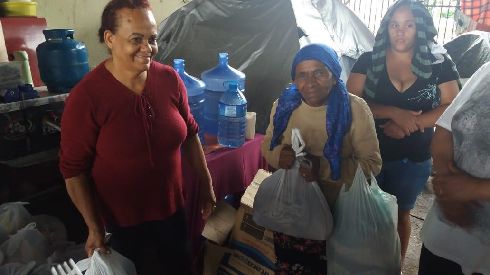

“A fome dos generosos é a sede de servir”
- Denisson D'Angelis
O CEU pela Vida é uma instituição de assistência social, sem fins lucrativos, isenta de quaisquer preconceitos e legalmente constituída.
Fundada em 2015 por Denisson D'Angelis e a Kelly D'Angelis, todos os trabalhos são reflexo de uma busca incessante pela paz, caridade e amor ao próximo. Mas, o que isso significa na prática?
Nossas ações traduzem nosso objetivo e compromisso fundamental com a preservação e o desenvolvimento pleno da vida. Temos como missão acompanhar e zelar por pessoas em situação de vulnerabilidade e exclusão social, principalmente com a distribuição de itens essenciais para sua sobrevivência e independência.
Localizado na região da Praça da Árvore, zona sul de São Paulo, o instituto trabalha dia e noite com o apoio de voluntários e parceiros.
Nosso Trabalho
“Curando as feridas dos outros é que curamos as nossas”
- Denisson D'Angelis
A fome
Para resolvermos um problema, precisamos reconhecer a sua existência. No mundo, são mais de 820 milhões de pessoas passando fome. Ou seja, todos os dias existem pessoas que não tem acesso a um prato de comida. A maior parte dessas pessoas também não tem um teto para morar. Só em São Paulo, a população de rua aumentou 53% nos últimos 4 anos. São em torno de 24 mil pessoas no total.
Diante desses números, o CEU pela Vida não podia ser indiferente.
Buscando agir diante dessa situação, criamos uma campanha de doações voluntárias para o amparo de todos aqueles que se encontram desabrigados e em situação de rua nas ragiões próximas a instituição.
Pouco a pouco, começamos a cadastrar diversas famílias e mensalmente doar itens essenciais para seu suporte. Só em 2019, foram mais de 15 toneladas de alimentos distribuídos para mais de 150 famílias cadastradas. Além disso, doamos roupas, kits de higiene pessoal, fraldas e brinquedos as crianças que tem as ruas como seu quintal.
Mais do que o acesso ao alimento, de corações abertos também compartilhamos o apoio emocional de um carinho, uma conversa e um abraço
Os companheiros fiéis
Atualmente começamos uma campanha de arrecadação de ração para cães e gatos para trazer alimento para aqueles que, muitas vezes, são as únicas companhias de quem vivem nas ruas.
Se quiser saber como contribuir para a dignidade dos animais de rua e seus donos, saiba mais abaixo como ajudar!
COVID-19
Chegamos em 2020 com mais de 200 famílias registradas e sob o amparo do CEU pela Vida. E nada disso seria possível sem a união de cada voluntário que acredita na seriedade, no compromisso e na missão desse projeto
Com a chegada do COVID-19 no Brasil e o compromisso fundamental de preservação da vida, o instituto fechou temporariamente suas portas. Inevitavelmente, isso significou a diminuição de contribuições financeiras e as doações de alimentos que recebíamos mensalmente.
Com o apoio de cada um de vocês, vamos continuar nossa missão de manter viva a dignidade humana e animal de todos aqueles sem acesso ao item mais básico e precioso do mundo: o alimento.
Mais de
200
famílias cadastradas
Mais de
15 toneladas
de alimentos distribuídos em 2019
Mais de
1 tonelada
de alimentos distribuídos todo mês
Contribua com as ações do CEU pela Vida!
Depósito em conta
Em nome de: CEU Estrela Guia
CPNJ: 23.491.453/0001-63
Banco: Caixa Econômica Federal
Agência: 0255 - Op. 003
CC: 00001964-1
Retirada ou Entrega
Para contribuir com doação de alimentos, roupas, brinquedos e produtos de higiene, entre em contato conosco e combine o melhor horário para sua entrega.
Email: ceupelavida@gmail.com
Celular: (11) 94519-6377 - Kelly